Feel the lift.
A city baking at noon. High above it, one rooftop, one cold bottle, and a single bubble climbing through the glass. SKYLET is a fictional sparkling water, Cucumber Lime, and this is its launch spot: thirty seconds, directed end to end by me, made with AI, and finished in two versions that share the same picture and the same ending.
The same thirty seconds, told two ways.
Both versions open on the same bubble, cross the same baking city and land on the same rooftop. What changes is who tells the story. In the song version, a full commercial song with lyrics does the talking. In the voiceover version, a narrator speaks across the spot and the music steps back underneath him. Both close on the same sung sound logo: “Sky-let! Sparkling Water! Feel the lift!”, the ending every future SKYLET spot will carry.
Carried by the song
A real commercial song, written from the spot’s own narration script so the lyrics carry the story: the heat, the climb, the pour, the lift. Summer soul-pop at 96 BPM, built on a rising whistle hook, ending on the jingle and one clean snap.
Carried by a narrator
The same cut with a narrator, Eli, speaking across the whole spot, a super on screen for every line, and the music mixed underneath the voice. The version a client asks for when the message has to land word for word.
A bubble, a city, a rooftop.
Stills from the finished song version, in story order. The spot opens inside the bottle, finds Noor above the heat, and ends on the pour.
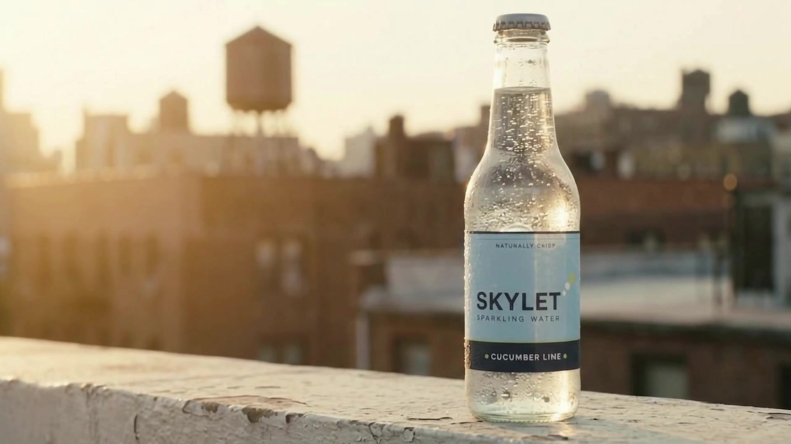
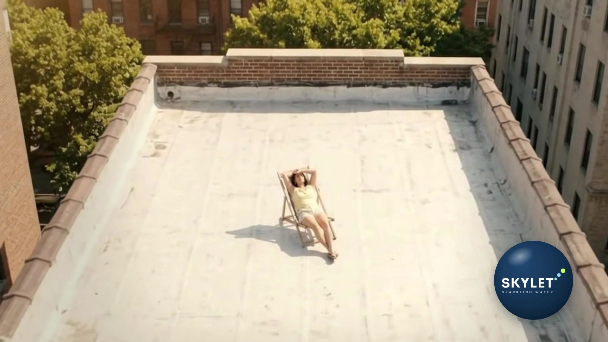
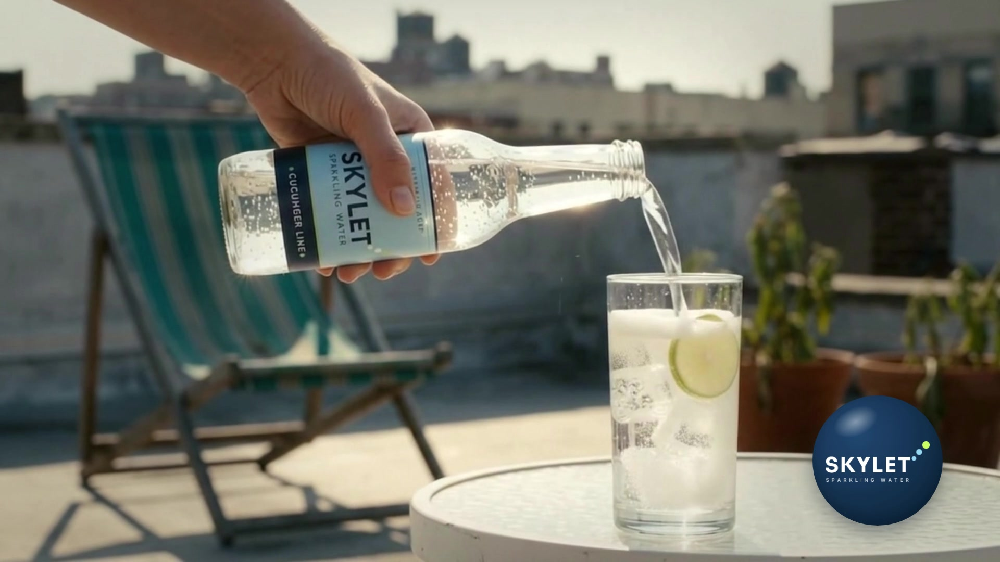
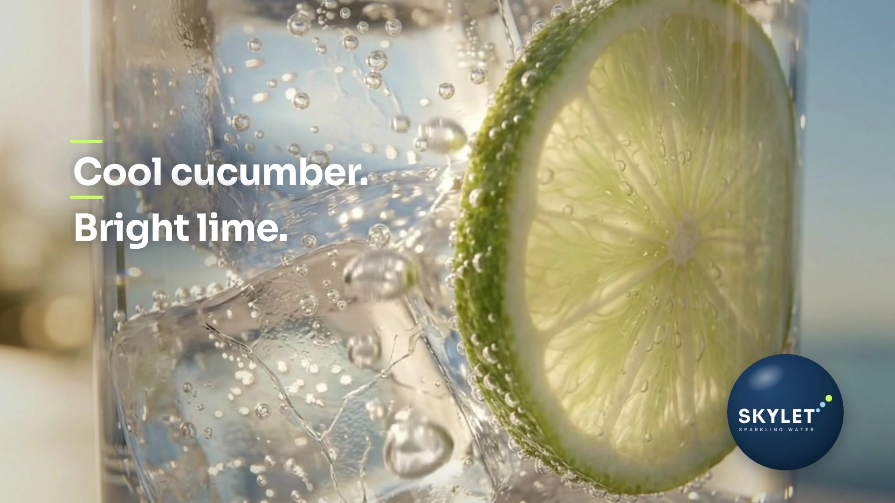
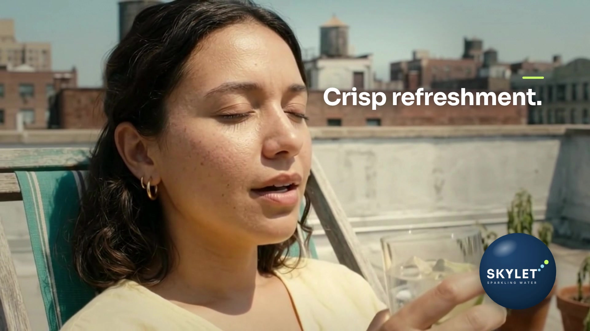
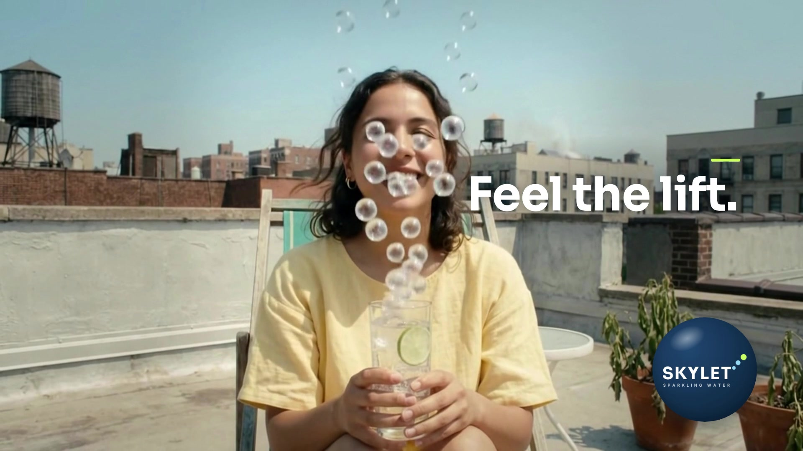
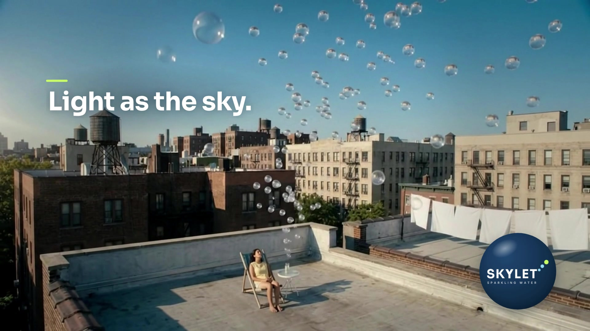
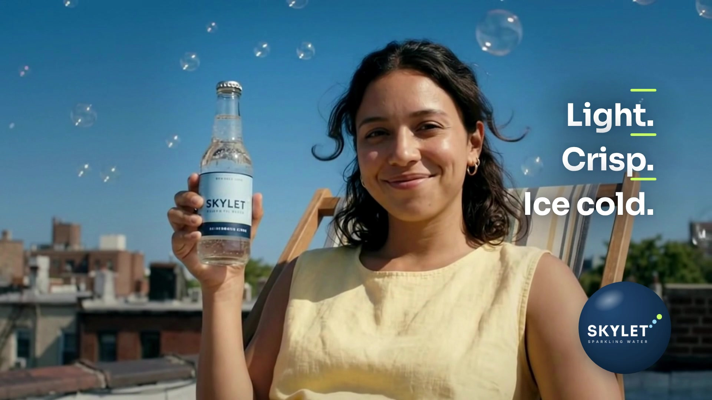
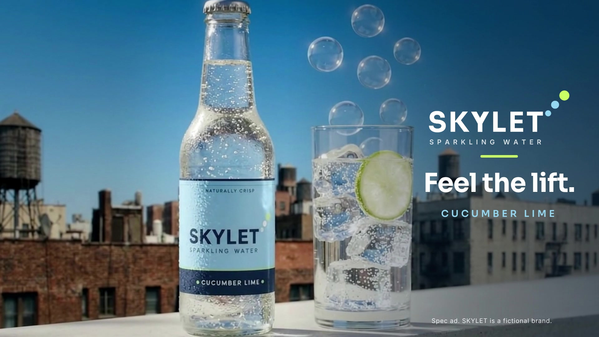
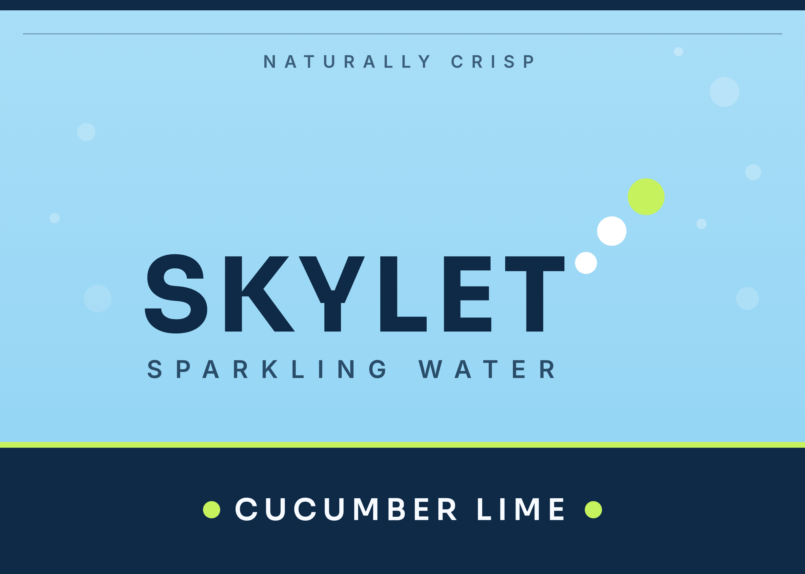
Featuring the song
Feel the Lift
Some commercials borrow a song. This one was written around one. “Feel the Lift” was composed from the spot’s own script, so the lyrics tell the same story as the pictures: the heat, the climb, the pour. Thirty seconds of it carry the film. This is the whole track, verses and all.
“Sky-let! Sparkling Water! Feel the lift!”
The Production Guide
Read the complete production guide for SKYLET: Feel the Lift.
The whole build plan: every reference, every shot and its prompt, the narration script the song was written from, the jingle session, and the road from the first cut to version eight, including what David sent back and what changed. Opens in a new tab.
Naturally crisp.
SKYLET Sparkling Water, Cucumber Lime. A pale sky label, a navy wordmark, and three bubbles rising off the T, the last one lime. The same lockup closes both versions of the spot, in a small navy circle at the corner of the frame, the way a house mark should.
Spec ad. SKYLET is a fictional brand. Concept, direction and production by David Martin, made with AI.